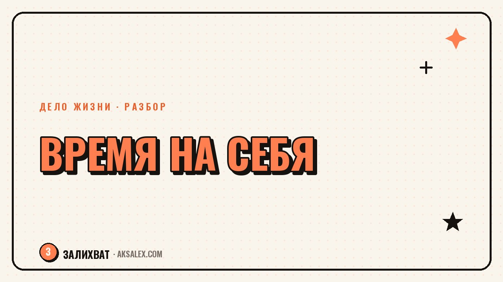

Как найти время на любимое дело при полной занятости

«Я бы занимался этим, но у меня нет времени» - фраза, за которой часто прячется не нехватка часов, а отсутствие понятного места для нового дела в уже сложившемся графике. Полная занятость не оставляет свободных дней, но почти всегда оставляет минуты, которые уходят на автомате куда угодно, кроме важного тебе самому. Разберём, как найти это время и встроить в него любимое дело.
Почему «нет времени» чаще не про время
Если честно посчитать, сколько времени за день уходит на бесцельный скролл или разговоры ни о чём, обычно находится от 40 минут до двух часов. Дело не в том, что их не существует, а в том, что они раздроблены на мелкие куски и не привязаны ни к какой цели.
Вторая причина - любимое дело в голове существует как что-то крупное: «написать книгу», «выучить язык». Крупная цель требует крупного куска времени, которого нет, и мозг откладывает старт до «отпуска». Решение - дробить цель до действий размером с те самые свободные 20-40 минут.
Частые причины ощущения «нет времени»
- Свободные минуты уходят в автоматические привычки вроде скролла
- Цель сформулирована крупно и не помещается в реальные промежутки
- Нет фиксированного места в графике - дело всегда «на подумать позже»
Где искать свободные 30-60 минут в обычном дне
Надёжный способ найти время - прожить три обычных дня, записывая каждый час, на что он ушёл. Обычно находится дорога, обеденный перерыв, вечер до того момента, когда включается лента, и час перед сном.
Не обязательно отбирать весь этот час у отдыха - достаточно забрать 20-30 минут и закрепить их за новым делом. Важно выбрать конкретный слот, а не абстрактное «найду время вечером» - абстрактные планы проигрывают конкретным привычкам почти всегда.
Где чаще всего находится время
- Дорога на работу и обратно - аудиоформаты, планирование, голосовые заметки
- Обеденный перерыв - 15-20 минут вместо соцсетей
- Первые 30 минут после работы, до того как включился автопилот отдыха
- Одно утро выходного дня, когда ещё никто не проснулся
Как встроить дело в график без перегруза
Рабочий принцип - привязать новое дело к уже существующей привычке, а не создавать отдельный ритуал с нуля. Если каждый день в обед ты открываешь телефон, можно открывать в это время заметку с черновиком вместо ленты - привычка уже есть, меняется только содержание.
Второй принцип - маленькие шаги вместо марафонов по выходным. 20 минут каждый день дают больше за месяц, чем один трёхчасовой заход раз в неделю, потому что регулярность удерживает тему в фокусе.
Время на любимое дело редко находится само - оно появляется, когда ты забираешь 20 минут у привычки, которая не приносит тебе ничего важного.
Формат под количество свободного времени
| Свободное время | Что успеть | Пример |
|---|---|---|
| 10-15 минут | Зафиксировать идею, прочитать абзац, набросать план | Голосовая заметка в дороге |
| 20-30 минут | Одна законченная микро-задача | Один абзац текста, один эскиз, один урок языка |
| 1-2 часа в выходной | Более глубокая работа, требующая концентрации | Съёмка контента, разбор сложной темы |
| Отпуск или длинный выходной | Крупный скачок: запуск, сборка, итог этапа | Собрать первую версию продукта или портфолио |
Ключевая идея - не ждать крупный слот, чтобы начать, а работать с тем форматом, который доступен сегодня. Крупные слоты редки и непредсказуемы, а мелкие происходят каждый день.
Что делать с усталостью после основной работы
Честный момент: после полного рабочего дня сил часто хватает только на отдых, и это не признак слабой дисциплины. Любимое дело не должно конкурировать с восстановлением - лучше выбрать формат с низким порогом усилия: не «написать главу», а «добавить одно предложение».
Если усталость системная каждый день, а не изредка, вопрос не в тайм-менеджменте, а в нагрузке на основной работе - полезнее разобраться с источником истощения, чем впихивать ещё одно дело в перегруженный день.
Когда времени действительно нет
Бывают периоды - маленький ребёнок, аварийный проект, болезнь близких - когда свободных минут объективно нет, и это не повод себя винить. Честнее признать паузу, а не изображать прогресс через силу: достаточно держать дело «на связи» одной заметкой в неделю.
- Признай честно, если период действительно без ресурса, а не притворяйся
- Держи минимальный контакт с делом, чтобы не начинать с нуля после паузы
- Вернись к поиску 20-минутных слотов, как только нагрузка снизится
Частые вопросы
Как найти время на хобби, если работаешь полный день
Прожить три дня с учётом каждого часа и найти 20-40 минут, которые уходят в автоматические привычки. Закрепить это время за хобби конкретным слотом, а не абстрактным «вечером как получится».
Сколько времени в день достаточно уделять любимому делу
Для старта хватает 15-30 минут ежедневно - регулярность важнее длительности одного подхода. Это удерживает тему в фокусе и не даёт растерять контекст между заходами.
Что делать, если после работы совсем нет сил на хобби
Выбрать формат с низким порогом усилия вместо крупной задачи: перечитать вчерашнее, добавить одно предложение, сделать один эскиз. Если усталость системная каждый день, стоит разобраться с нагрузкой на основной работе.
Как не бросить новое дело через пару недель
Привязать его к уже существующей привычке, а не создавать отдельный ритуал с нуля, и работать маленькими порциями каждый день, а не марафонами по выходным. Это требует меньше силы воли и держит дело в фокусе.
Что делать, если свободного времени объективно нет из-за детей или работы
Честно признать период без ресурса и не вини себя за паузу. Достаточно держать минимальный контакт с делом - одна заметка в неделю - и вернуться к системной работе, когда нагрузка снизится.
Раз тема оказалась полезной, вот что почитать следующим. Как рассказывать о своём деле так, чтобы люди запоминали и хотели узнать больше.
Читать статью →а не вручную